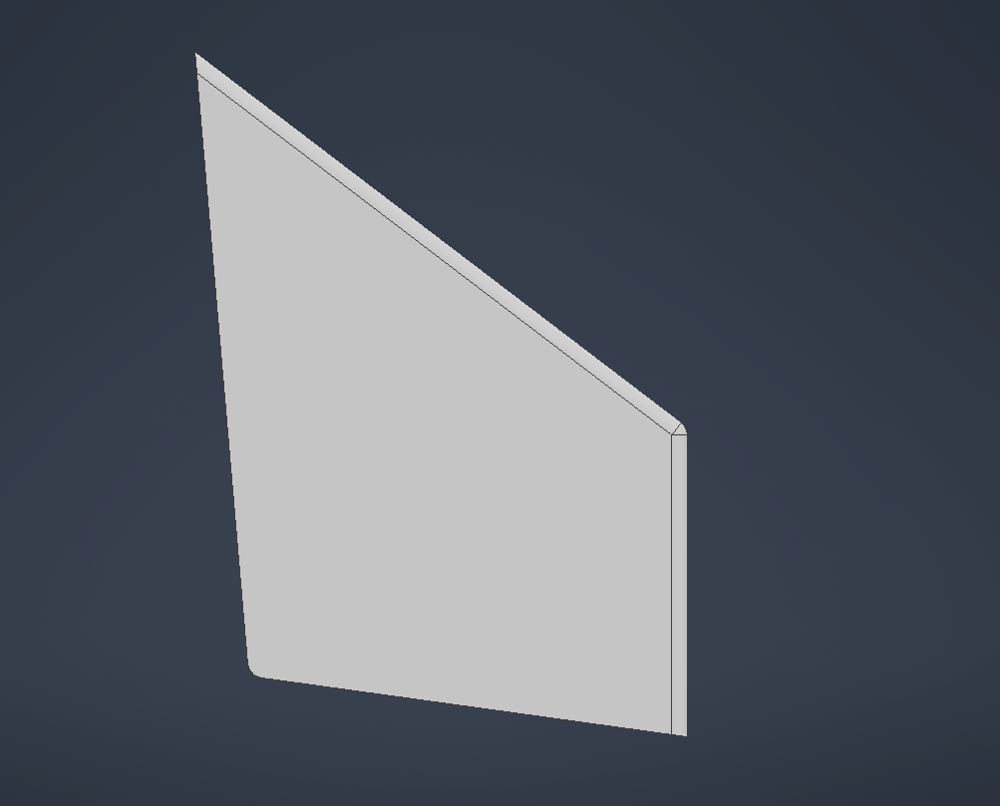
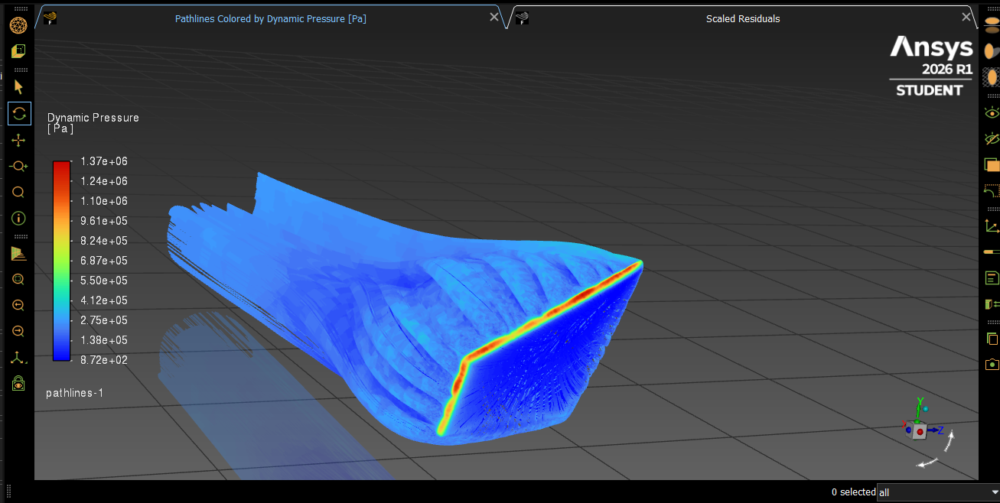
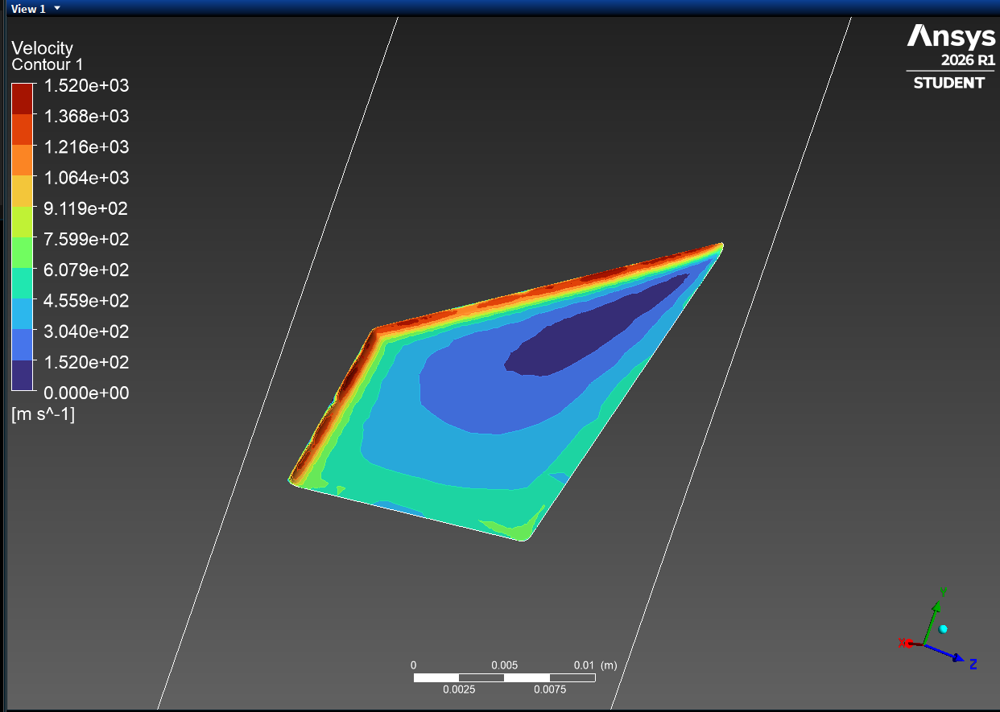
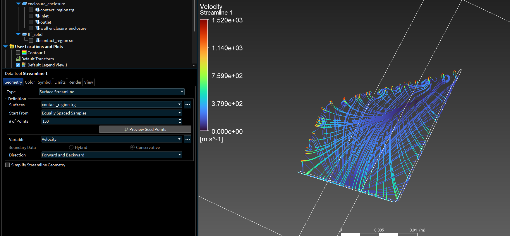
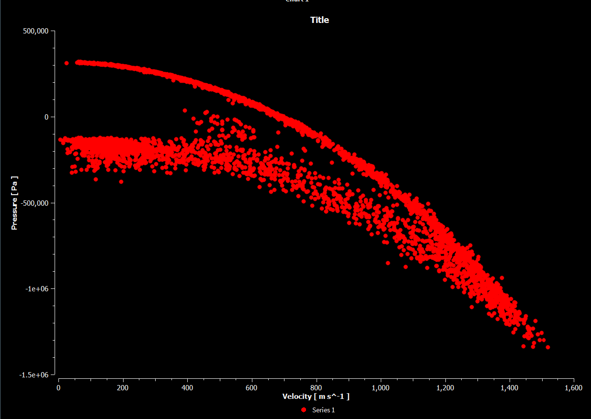

I modeled a Starship forward flap in Inventor and ran supersonic CFD on it in Ansys Fluent with the k-ω SST turbulence model. Then I mapped the Mach 2, 25° angle-of-attack pressure loads onto an Ansys Static Structural model in a one-way FSI workflow.

Post-processed in CFD-Post with velocity contours, surface streamlines and pathlines. The results show strong acceleration at the leading edge and separated flow over the flap's upper surface.



